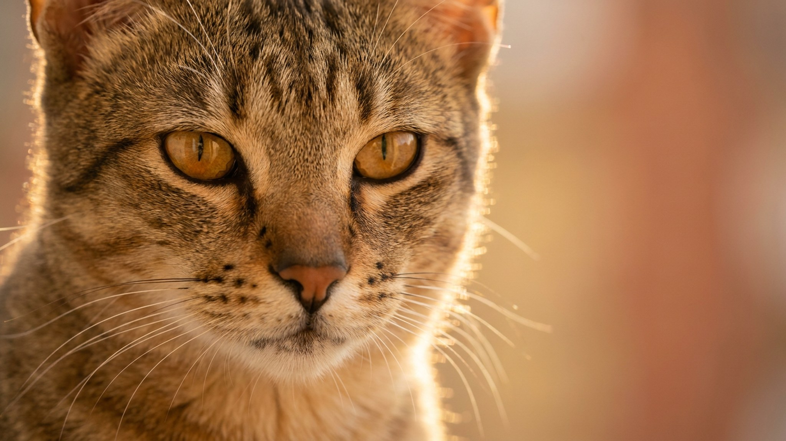

Чаузи стоит рядом с вами — и на секунду не верится, что это домашняя кошка: крупное тело, длинные ноги, пятнистая шерсть, взгляд охотника. Порода произошла от скрещивания домашней кошки с диким камышовым котом, и этот факт определяет всё. Чаузи не просто «активная» кошка — это спортсмен с острым умом, которому нужна постоянная работа. Ниже — как выглядит жизнь с чаузи в квартире и что важно понять до того, как взять котёнка.
🐾 У вас чаузи?
AnimaLife соберёт уход под породу: к каким болезням есть склонность, что проверять по возрасту, чем кормить и когда пора к врачу. Бесплатно, прямо в мессенджере.
Собрать план ухода → Собрать в MAX →
У вас iPhone? AnimaLife есть в App Store
Чаузи — одна из самых крупных пород среди домашних кошек. Взрослый самец весит 8–12 кг при длинном мускулистом теле. Прыжок в высоту до двух метров — норма, а не рекорд. Это означает одно: квартира без вертикального пространства для чаузи не подходит.
Чаузи скучает опаснее, чем устаёт. Острый ум без нагрузки — прямой путь к разбитым стаканам, открытым дверцам шкафов и ободранным обоям. Это не вредность, это порода.
Чаузи — компаньонная кошка с почти собачьей степенью привязанности к хозяину. Она следует за вами по квартире, встречает у двери и предпочитает быть там, где вы. Это её нормальное состояние, а не тревога.
Оборотная сторона: одиночество чаузи переносит плохо. Если кошка часами предоставлена сама себе без стимулов — это прямо сказывается на поведении. Идеально, когда в доме есть второй питомец (ещё один кот или собака, с которой познакомили правильно) или кто-то из людей бывает дома в течение дня.
С детьми и гостями чаузи, как правило, контактна и не прячется. Но на грубость реагирует моментально — доверие потерять легко, восстановить долго.
При всей «дикости» в уходе чаузи не капризна. Шерсть короткая или полудлинная (в зависимости от линии), расчёсывать достаточно раз в неделю. Линяет умеренно.
🐾 Ваш питомец — чаузи?
Заведите профиль в AnimaLife: приложение запомнит породу, возраст и вес и будет подсказывать по уходу именно для неё. Вопросы AI-ветеринару — круглосуточно и бесплатно.
Завести профиль → Завести в MAX →
У вас iPhone? AnimaLife есть в App Store
🐾 Понравился разбор?
Подпишитесь на канал — каждый день разбираем по одному тревожному симптому у кошек и собак: что в пределах нормы, а когда пора к врачу. Подпишитесь, чтобы не пропустить разбор, который может спасти здоровье вашего питомца.
Чаузи — не фоновый питомец. Эта порода требует вовлечённости: пространства, времени, игр, общения. Взамен даёт настоящий контакт — кошку, которая знает вас по шагам, помнит распорядок и активно участвует в вашей жизни. Для человека, готового вложить энергию, — один из лучших выборов. Для занятого и домоседа — нет.
Материал носит информационный характер и не заменяет очную консультацию ветеринара.